TARTU ARVUTI EMULAATORI KASUTUSJUHEND
0. TARTU arvuti emulaatori sissejuhatus
TARTU arvuti väljatöötlus algas 1983 aastal Tartu Ülikoolis Leo Henn Humala juhtimisel, samal aastal valmis töötav prototüüp. Arvuti protsessoriks sai К580ВМ80А 2.0 Mhz (Intel 8080A kloon). Operatiivmälu (RAM) 64KB, püsimälu (ROM) 16KB, graafika mustvalge 64 x 25 tähemärki / 384 x 256 pikslit. Salvestusseadmetena olid kasutusel kassettmagnetofon (mis luges/salvestas andmeid tavalisele helikassetile), 5.25" / 8" disketiseadmed ja kui väga vedas, siis külmkapi mõõtu EC tüüpi 7 MB ja 29 MB kõvakettad. Arvuti püsimälus asuv MONITOR tarkvara võimaldab masinkeeles teha kõiki operatsioone arvutiga sh. kuvada/muuta operatiivmälu sisu, laadida/salvestada operatiivmällu tarkvara, seda disassembleerida ning käivitada. Samuti sai otse MONITOR’ist käitada arvuti lisaseadmeid. Lühidalt siis piisas kõvale mehele ainult MONITOR’ist, et rakendada enda kasuks tööle kogu TARTU arvuti funktsionaalsus. Püsimälus paikneb ka omal ajal Olev Toomi poolt loodud Basic keele interpretaator T-BASIC (TARTU BASIC). MONITOR’i ja tavalise kassettmagnetofoni abil on võimalk laadida/salvestada helikassetilt arvuti operatiivmällu masinkoodis kirjutatud tarkvara. T-BASIC luges/salvestas Basicus kirjutatud programme kassettmagnetofoni abil helikassetile. Osa TARTU arvuti tarkvara (näiteks tekstiredaktor TE63) võimaldab failide lugemist/salvestamist nii kassettmagnetofonilt kui disketilt. Disketiseadme abil on võimalik kasutada operatsioonisüsteemi CP/M 2.2 ja TARTU arvuti jaoks kohandatud CP/M tarkvara.
TARTU arvuti emulaator võimaldab kasutada arvuti püsimälus paiknevaid MONITOR ja T-BASIC tarkvarasid, lugeda/salvestada virtuaalsele kassettmagnetofonile, virtuaalsetele disketiseadmetele ning käitada kogu saadaolevat TARTU arvutile loodud tarkvara. Samuti töötab virtuaalse disketiseadme abil TARTU arvuti jaoks kohandatud versioon operatsioonisüsteemist CP/M 2.2.
1. TARTU arvuti emulaatori tutvustus ja algkäivitamine
TARTU arvuti emulaatori käivitamiseks käivitage fail emu.exe
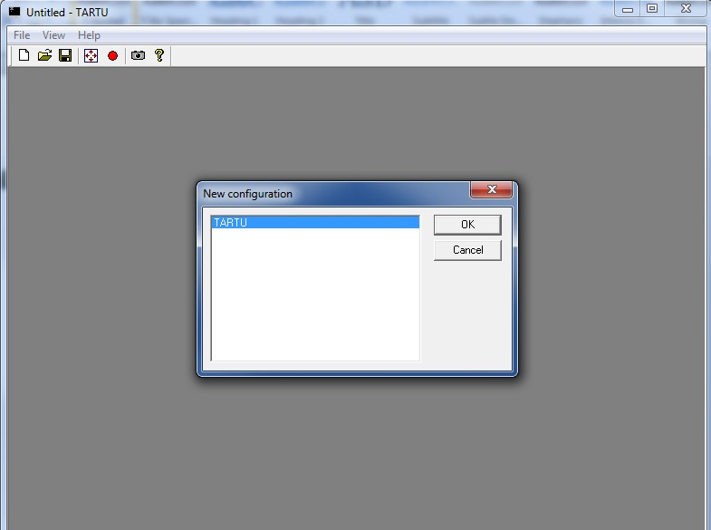
Valige menüüst TARTU ja vajutage OK
TARTU ARVUTI EMULAATORI menüüvalikute selgitused
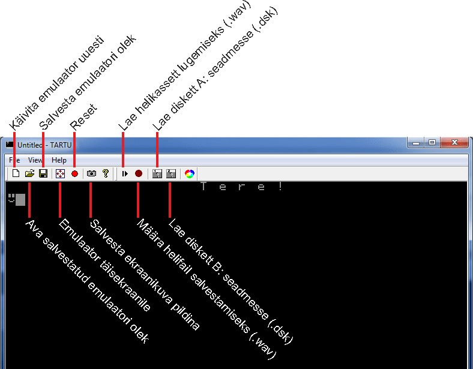
TARTU arvuti käivitub peale sisselülitamist MONITOR režiimis, TARTU arvuti ütleb Teile
Eesti keeles ja alati rõõmus MONITOR’i käsuviip 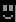 ootab Teie käske.
TARTU arvuti MONITOR'i režiim võimaldab operatiivmälu sisu kuvamist, muutmist, disassembleerimist, välisseadmete juhtimist, T-BASIC'u käivitamist, programmide sisestamist, käivitamist, magnetofonilt sisse lugemist ja salvestamist ning CP/M operatsioonisüsteemi käivitamist. Kõiki MONITOR’i ja T-BASIC’u käske ja funktsioone ning TARTU arvuti programmide instruktsioone saate täpsemalt lugeda
TARTU ARVUTI KASUTAJA JUHENDIST

KIIRE TARTU ARVUTI MONITORI SPIKKER
100R +  |
|
Laeb helikassetilt programmi arvuti operatiivmällu |
100g + |
|
Programmi käivitamine peale helikassetilt laadimist |
d000R + |
|
Laeb helikassetilt digitaalse foto otse videomällu |
d000g +
|
|
Käivitub püsimälus (ROM) asuv T-BASIC
T-Basic'us saab salvestada ja laadida programme helikassetilt |
c800g + |
|
Käivitab CP/M alglaadimise disketiseadmelt |
2. MONITOR režiimis programmide laadimine, käivitamine ja salvestamine virtuaalsele helikassetile
2.1 MONITOR‘is programmi laadimine helikassetilt TARTU arvuti operatiivmällu ja käivitamine
TARTU arvuti MONITOR võimaldab lugeda kassettmagnetofoni abil helikassetile salvestatud programmi otse arvuti operatiivmällu (RAM)
Selleks sisesta käsk 100R ja vajutage
“100” on mälu aadress HEX koodis ja “R” tähendab “READ” ehk käsku leida magnetofoni lindilt esimene ettejuhtuv programm ja lugeda selle sisu mällu alates aadressist “100”
(100 HEX koodis = 256 kümnendkoodis).
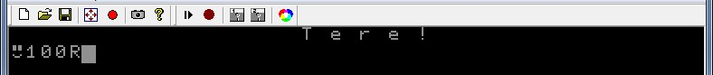
Ilmub kiri “Press PLAY on tape & any key on keyboard”
Vajutage
Ilmub kiri “Searching” mis tähendab, et TARTU arvuti ootab kuni magnetofonist hakkab info laadimine.
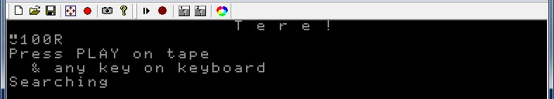
Vajutage menüüribal nuppu ja valige virtuaalne kasseti fail .wav
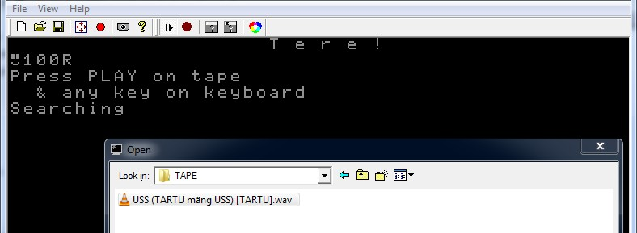
TARTU arvuti virtuaalse helikasseti (.wav) failid asuvad emulaatori alamkataloogi # SOFTWARE alamkataloogides mis on märgistatud tähisega [TAPE]
Ekraanile ilmub teade “Found uss”, “uss” on kassetilt leitud programmi nimi ja teade “Loading” tähendab, et programmi hakati magnetofonist TARTU arvuti operatiivmälusse laadima
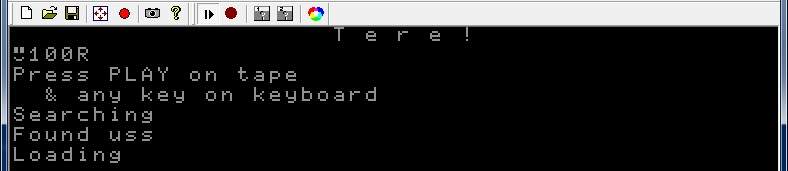
TARTU arvuti emulaator emuleerib tegelikku aega mis kulub kassettmagentofonilt programmi laadimiseks ja olenevalt programmi pikkusest võib kuluda aega omajagu, nii see vanasti käis.
| 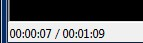 |
Helikassetilt faili laadimise ajalist kogupikkust ja hetkel laadimiseks kulunud aega kuvatakse emulaatori vasakus all nurgas. |
Tuleb oodata kuniks programm kassetilt laeb ja ilmub kiri OK ja MONITOR’i käsuviip
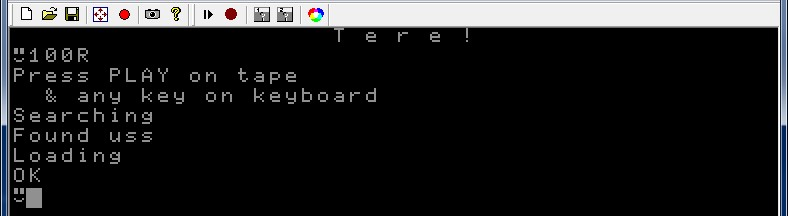
Teade OK tähendab, et programm on TARTU arvutisse laetud ilma vigadeta ja valmis käivitamiseks operatiivmälu(RAM) aadressilt 100 millesse see sai magnetofonist laetud käsuga 100R,
programmi käivitamiseks sisesta käsk 100g ja vajutage
“100” on mälu aadress HEX koodis ja “g” tähendab “GO” ehk käsku protsessorile alustada
programmi täitmist alates sellelt mälu aadressilt (d000 HEX koodis = 256 kümnendkoodis).
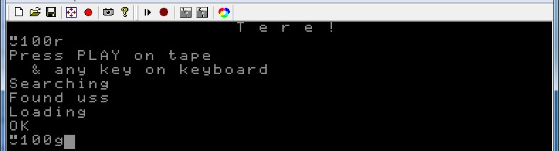
Käivitub TARTU arvuti mäng “USS"
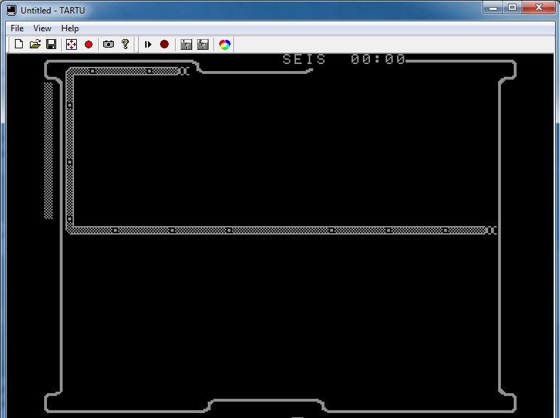
2.2 MONITOR režiimis digitaalse foto laadimine TARTU arvuti videomällu
Digitaalse pildi laadimise alustamiseks sisestage käsk d000R ja vajutage
d000 on (video)mälu aadress HEX koodis ja “R” tähendab “READ” ehk käsku leida magnetofoni lindilt esimene ettejuhtuv programm ja lugeda selle sisu operatiivmällu alates aadressist d000.
d000 on TARTU arvuti videomälu algusaadress ja kõik mis sinna loetakse on koheselt näha ka ekraanil punktidena. (d000 HEX koodis = 53248 kümnendkoodis).
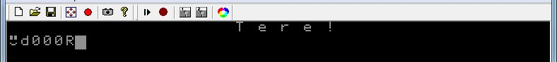
Tähelepanelikul TARTU arvuti huvilisel tekkis kohe küsimus, et kuidas saab püsimälus (ROM) asuv T-BASIC (mis algab samuti aadressilt d000) asuda videomäluga samal aadressil?
Tegemist on riistvaralise trikiga ajast mil operatiivmälu (samuti ka mäluaadressid) olid piiratud ressurss (maksimaalselt 64KB ehk 65535 aadressi 8 bitisel arvutil). Videomälu ja püsimälu (ROM) on füüsiliselt täiesti eraldi mälukiibid mida kasutati samadel aadressitel kuna videomällu (ekraanipunkte) oli tarvis ainult kirjutada ja püsimälu kiipi (ROM) sai ainult lugeda. Seega operatiivmälu aadressi d000 lugemisel pöörduti hoopis püsimälu kiibi (ROM) poole ja aadressi d000 kirjutamisel videomälu kiibi (RAM) poole.
Ilmub teade “Press PLAY on tape & any key on keyboard”
vajutage
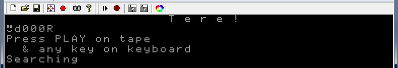
Vajutage menüüribal nuppu ja valige virtuaalne kasseti fail .wav
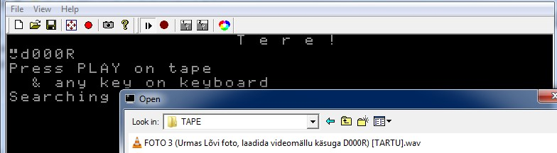
TARTU arvuti virtuaalse helikasseti (.wav) failid asuvad emulaatori alamkataloogis # SOFTWARE
alamkataloogides mis on märgistatud tähisega [TAPE]
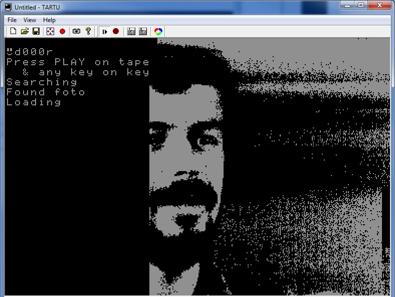
Ekraanile ilmub järk-järgult digitaalne foto kuna see kirjutatakse helikassetilt otse videomällu
TARTU arvuti abil fotografeeriti 1984 aastal mustvalgest videokaamerast otse arvutisse esimesed Eesti digitaalsed fotod resolutsiooniga 384 x 256, värvisügavusega 1 bitt.
2.3 MONITOR‘is TARTU arvuti operatiivmälu sisu salvestamine helikassetile
TARTU arvuti operatiivmälus olevate andmete salvestamine helikassetile oli imelihtne ja soodne. Disketid ja disketiseadmed olid kallis ning defitsiitne kaup ehk siis neid pigem ei olnudki.
Helikasseti kasutamine oli mõnevõrra keerulisem ja aeganõudvam, sama aega ju oli.
MONITOR’i käsk operatiivmälu (RAM) salvestamiseks helikassetile
<algusaadress> W <lõppaadress> <faili nimi>
Näide: 100W200 pille + vajutage
Salvestab operatiivmälust aadressite vahemiku 100 kuni 200 helikassetile faili nimega pille
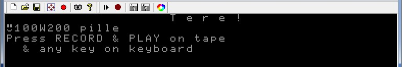
Ilmub teade: Press RECORD & PLAY on tape & any key on keyboard
Vajutage menüüribal nuppu (parempoolne) ning vali .wav fail millesse soovid salvestada.
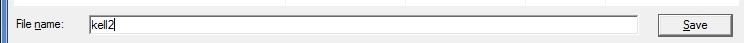
Soovi korral võid luua uue .wav faili kirjutades selle nime lahtrisse File name
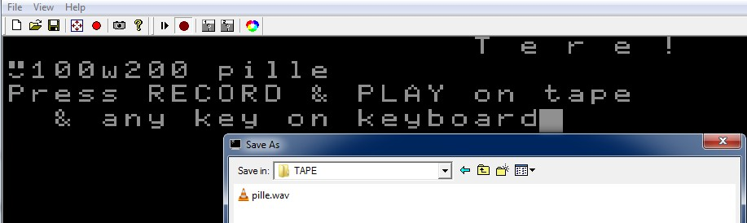
TARTU arvuti virtuaalse helikasseti (.wav) failid asuvad emulaatori alamkataloogis # SOFTWARE
alamkataloogides mis on märgistatud tähisega [TAPE]
Vajutage
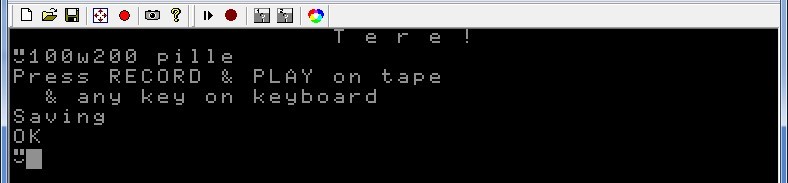
Teade OK kinnitab, et operatiivmälu sisu on edukalt kassetile salvestatud
Vajuta seejärel uuesti menüüribal nuppu (parempoolne), et lõpetada kassetile salvestamine, vastasel juhul jätkab emulaator virtuaalsele kassetile tühjuse salvestamist ja .wav fail paisub suureks.
3. T-BASIC
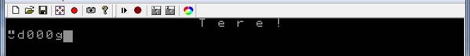
T-BASIC’u käivitamiseks trükkige MONITOR’is käsk d000g ja vajutage
“d000” on mälu aadress HEX koodis ja “g” tähendab “GO” ehk käsku alustada
programmi täitmist antud mälu aadressilt (d000 HEX koodis = 53248 kümnendkoodis).
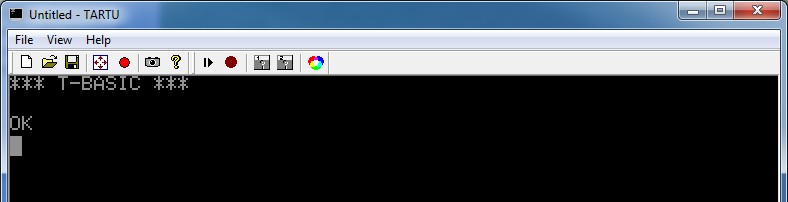
Käivitub TARTU arvuti püsimällu (ROM'i) sisseehitatud Basic interpretaator võimaldab luua programme Basic keeles,
neid salvestada ja lugeda virtuaalsele magnetofoni helikassetile.
Emulaatoris kasutatakse helikassetina .wav faile.
3.1 Programmi lugemine virtuaalselt helikassetilt T-BASIC'usse
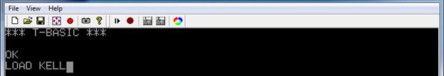
Sisesta käsk LOAD <programmi nimi> ning vajuta
Näide: LOAD KELL
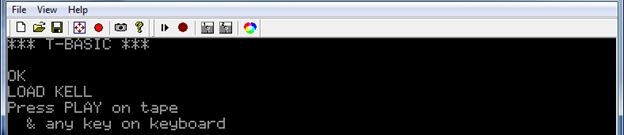
Ilmub kiri "Press PLAY on tape & any key on keyboard"
Vajuta suvalist klahvi
Seejärel vajuta menüüribal nuppu ning vali virtuaalse helikasseti .wav fail
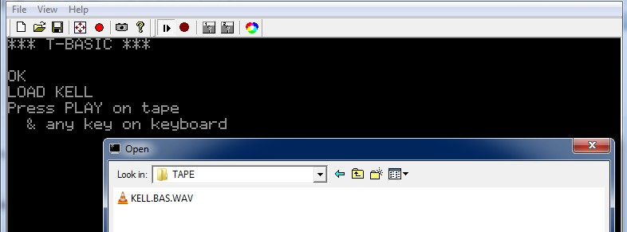
TARTU arvuti virtuaalse helikasseti (.wav) failid T-BASIC’ule asuvad emulaatori alamkataloogis
# SOFTWARE alamkataloogides mis on märgistatud tähisega [TAPE]
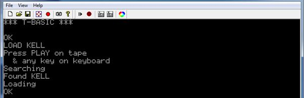
Programmi pikkusest sõltuva aja pärast tuleb teade OK, programm on laetud helikassetilt
TARTU arvutisse
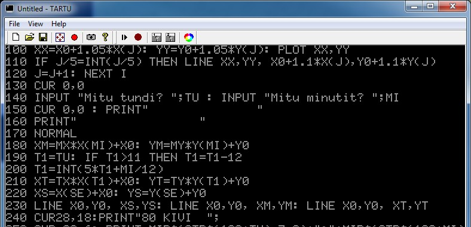
Käsuga LIST + on võimalik programmi sisu ekraanil kuvada
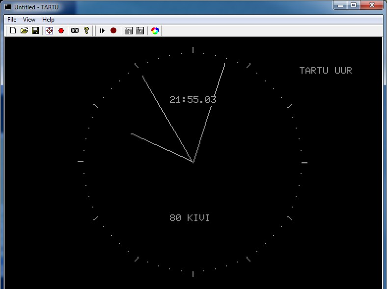
Käsuga RUN + käivitad programmi
 + C klahvikombinatsioon katkestab programmi täitmise + C klahvikombinatsioon katkestab programmi täitmise
3.2 programmi salvestamine virtuaalsele helikassetile T-BASIC'us
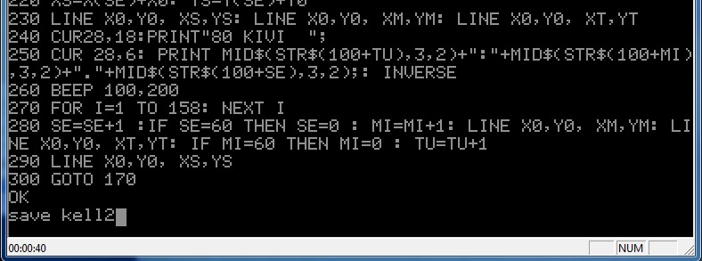
Sisesta käsk SAVE <programmi nimi> +
Näide: SAVE KELL2 +
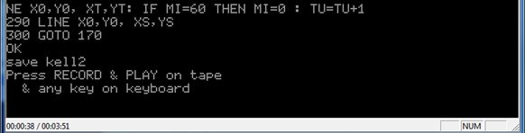
Ilmub tekst "Press RECORD & PLAY on tape & any key on keyboard"
Vajuta menüüst nuppu (parempoolne) ja vali .wav fail millesse soovid T-BASIC programmi salvestada.
Soovi korral võid luua uue .wav faili kirjutades selle nime lahtrisse File name
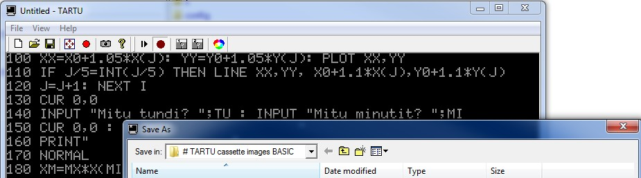
TARTU arvuti virtuaalse helikasseti (.wav) failid T-BASIC’ule asuvad emulaatori alamkataloogis
# SOFTWARE alamkataloogides mis on märgistatud tähisega [TAPE]
Seejärel vajuta suvalist klahvi
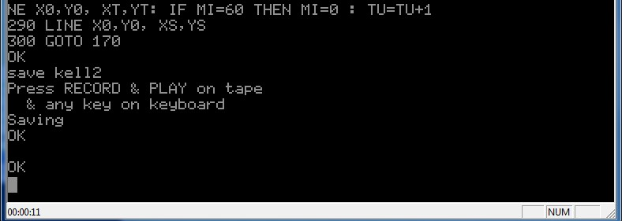
Ilmuvad teated SAVING ja OK mis kinnitab, et programm on edukalt salvestatud virtuaalsele helikassetile ehk kasutaja poolt määratud .wav faili.
Vajuta seejärel uuesti menüüribal nuppu (parempoolne), et lõpetada kassetile salvestamine, vastasel juhul jätkab emulaator virtuaalsele kassetile tühjuse salvestamist ja .wav fail paisub suureks.
4. Operatsioonisüsteem CP/M 2.2
Enne CP/M käivitamist tuleb sisestada TARTU arvuti esimesse A: disketiseadmesse virtuaalne diskett
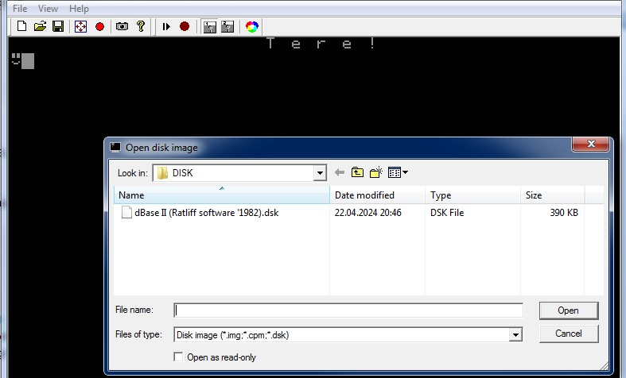
TARTU arvuti virtuaalsete diskettide (.dsk) failid asuvad emulaatori alamkataloogis # SOFTWARE
alamkataloogides mis on märgistatud tähisega [DISK]
CP/M käivitamiseks tuleb TARTU arvuti MONITOR’is sisestada käsk c800g + mis tähendab, et arvuti suunatakse täitma püsimälus (ROM) olevat alamprogrammi mis pöördub läbi disketiseadme kontrolleri disketiseadme poole, et disketilt käivitada CP/M operatsioonisüsteem.
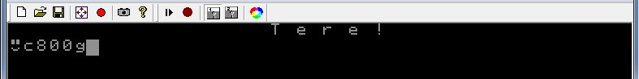
Kui CP/M operatsioonisüsteemi käivitamine õnnestus ilmub käsuviip A>
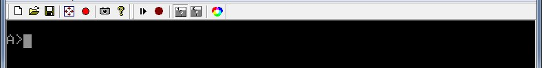
Peale käsuviiba ilmumist on TARTU arvuti valmis tööks operatsioonisüsteemiga CP/M

Disketil olevate failide kuvamiseks kasuta käsku DIR +
Programmide käivitamiseks kirjuta programmi nimi +
5. TARTU arvuti klaviatuur
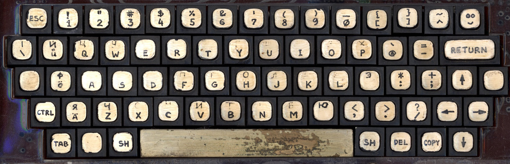
Esimese plastikust TARTU arvuti klaviatuur aastast 1984
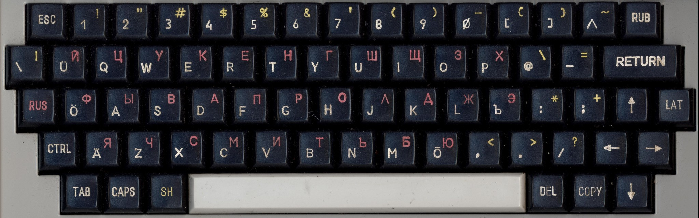
Paliveres toodetud TARTU arvuti klaviatuur aastast 1988
TARTU arvutil on esimene Eesti keelse arvutiklaviatuuriga arvuti.
| 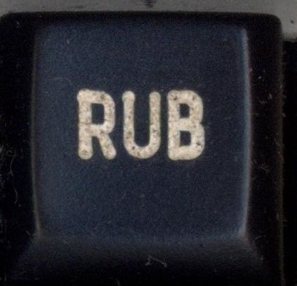 |
Allpool on toodud eriklahvide selgitused ja vasted modernsel personaalarvuti klaviatuuril.
RUBOUT =  on spetsiaalne CP/M terminalides kasutatud funktsiooniklahv kursorist vasakul oleva märgi kustutamiseks. on spetsiaalne CP/M terminalides kasutatud funktsiooniklahv kursorist vasakul oleva märgi kustutamiseks. |
 |
LAT =  (VASAK) aktiveerib klaviatuuril ladinakeelsed tähed (VASAK) aktiveerib klaviatuuril ladinakeelsed tähed |
| 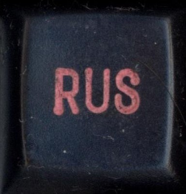 |
RUS =  aktiveerib klaviatuuril venekeelsed tähed aktiveerib klaviatuuril venekeelsed tähed |
| 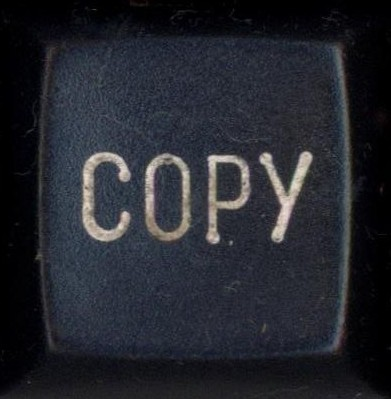 |
COPY =  spetsiaalne funktsioon juba sisestatud tekstirea uuesti sisestamiseks spetsiaalne funktsioon juba sisestatud tekstirea uuesti sisestamiseks |
| 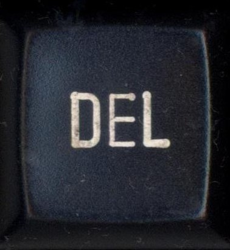 |
DEL =  kustutab vasakult eelmise tähemärgi kustutab vasakult eelmise tähemärgi |
6. TARTU arvuti emulaatori nipid
Kui soovid emulaatori värskelt uuesti käivitada vajuta menüüribal vali TARTU ja vajuta [OK]
T-BASIC’u kiireks käivitamiseks MONITOR’ist vajuta lihtsalt RESET 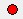 (vasakpoolne)
+ RESET (vasakpoolne) viib TARTU arvuti MONITOR’i režiimi, selliselt, et operatiivmälu sisu jääb alles.
MONITOR’is helikassetilt programmi sisse lugedes piisab käsust R + mis automaatselt laeb kasseti sisu aadressile 100, ehk võrdub käsuga 100R +
+ lülitab emulaatori täisekraani režiimi ja tagasi
MONITOR’i mälu liigutamise käsku M (<sihtkoht> M <lähtek. algus> <lähtek. lõpp>) saab kasutada mäluosa täitmiseks korduva mustriga.
Loe ARVUTI TARTU KASUTAJA JUHENDIT
|